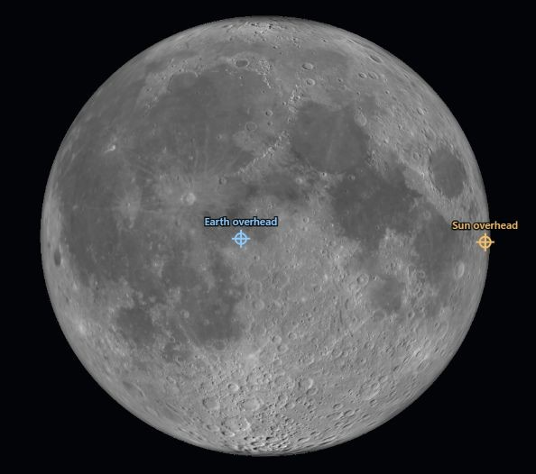

Explore the horizon
Face Earth from the lander, step across Earthset, and inspect the terrain skyline.
Open Earthset demoLunar Landing Site Navigator
Explore the Moon’s south pole. Compare landing sites and arrival dates to see how terrain changes sunlight, power, and potential contact with Earth.

Why it matters
Near the Moon’s south pole, a ridge can block the low Sun or hide Earth for hours. A lander may have to run on batteries while it waits for sunlight, and a team may have to wait for the next chance to send data home.
When a launch slips, planners can compare a new arrival date or a nearby site and see which option leaves enough sunlight and potential contact for the planned work.
Face Earth from the lander, step across Earthset, and inspect the terrain skyline.
Open Earthset demoPut two sites side by side, or change one mission input and compare its effect.
Open comparisonSearch later dates and weigh potential contact against time with an empty battery.
Open date searchLaser altimetry supplies the elevation models used to trace local skylines.
NASA LOLA data ↗Bundled ephemerides give Sun and Earth directions for each preset site over time.
Horizons documentation ↗Orbiter mosaics provide the terrain context visible in the 2D and 3D maps.
LROC map products ↗The app models sunlight, battery behavior, and potential contact. Its Deep Space Network estimate is based on terrain visibility and station elevation.